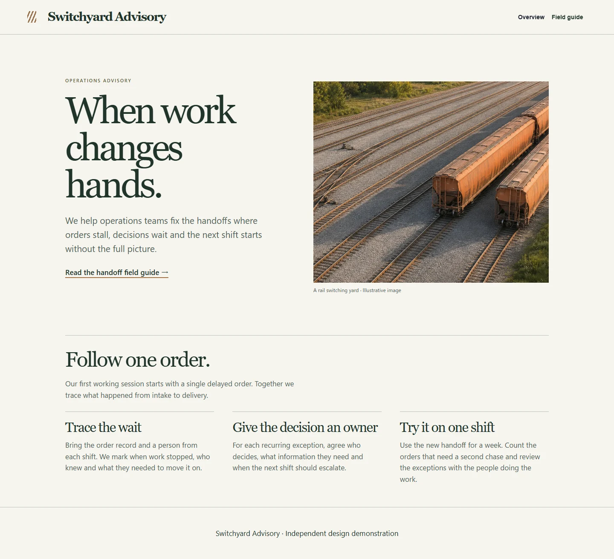
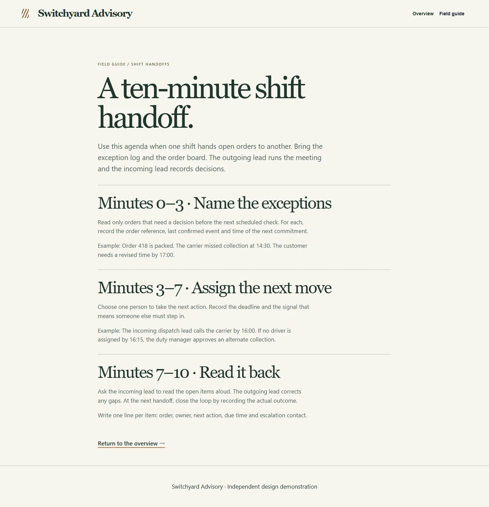
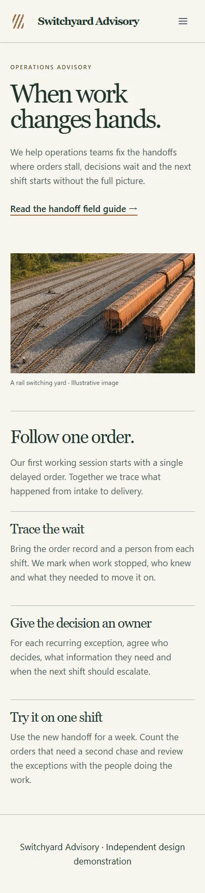

Switchyard Advisory
A two-page WordPress sample for a fictional operations consultancy. The overview introduces its services and links to a field guide that a shift lead can use at handover.
To try a copy edit, open /wp-admin/ in the Playground address bar, then choose Pages → Handoff field guide → Edit. Your changes stay in your own temporary site.

View the handoff field guide

View the mobile layout
